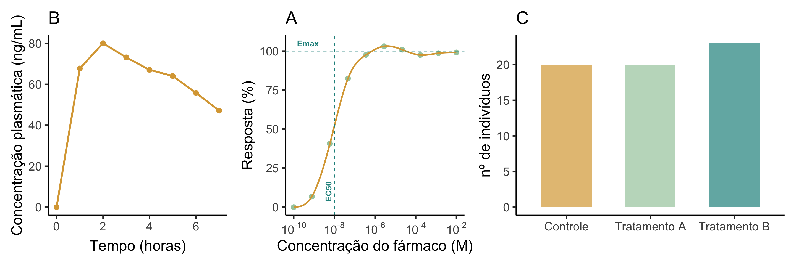
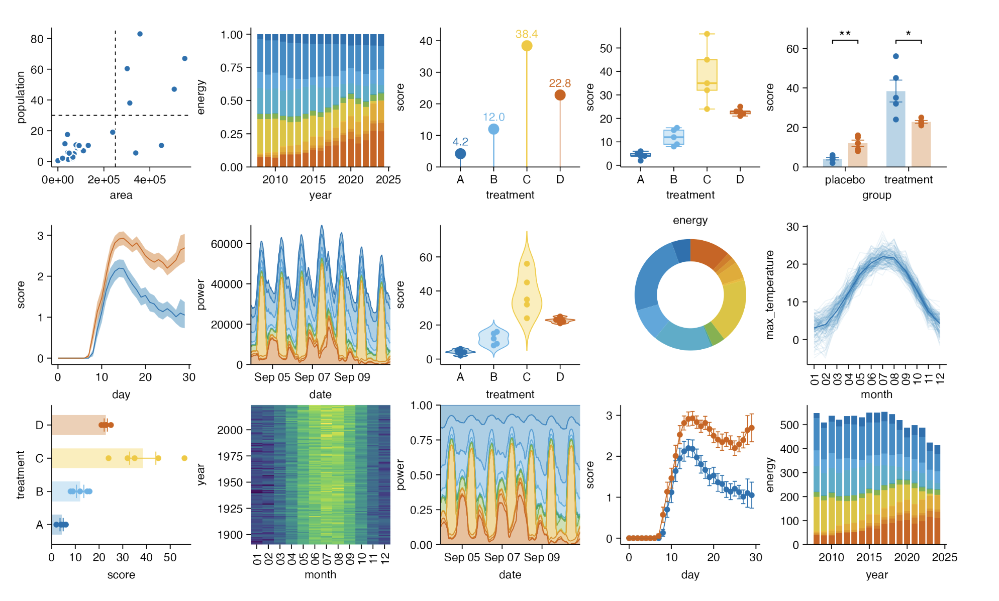

Visualização de Dados em Farmacologia
Tipos de gráficos, como plotá-los e boas práticas para publicações
Ma. Tamires Martins
July 24, 2025
Objetivos da oficina
- Entender o papel dos gráficos em farmacologia
- Explorar tipos de gráficos: dose-resposta, respostas de grupos etc.
- Revisar conceitos estatísticos básicos
- Aplicar boas práticas gráficas para publicação
- Compreender a teoria das cores e acessibilidade
- Praticar com pacotes em R: ggplot2 e tidyplots
Materiais
- Slides <
- Projeto no GitHub
- Cheatsheets impressos
Cronograma
| Horário | Atividade |
|---|---|
| 14h - 14h20 | Introdução à visualização |
| 14h20 - 14h50 | Tipos de gráficos em farmacologia |
| 14h50 - 15h15 | Boas práticas + teoria das cores |
| 15h15 - 15h45 | Intervalo |
| 15h45 - 17h00 | Prática com ggplot2 e tidyplots |
O que é visualização de dados?
Representação gráfica de informações e dados.
“O objetivo científico de qualquer visualização é permitir que o leitor compreenda os dados e extraia informações intuitivamente, eficientemente e com precisão.” - Royal Statistical Society
Comunicação clara de padrões
Suporte à decisão e descoberta científica
Evita interpretações erradas
Krause, Rennie, and Tarran (2024)
Ciência + Arte
Em 1859, Florence Nightingale publicou descobertas sobre a situação sanitária do exército britânico durante a guerra com a Rússia.
O plano cartesiano
Todo gráfico começa com eixos (X e Y) que criam um espaço.
Poderia ser 3D
As variáveis
Os eixos (ou dimensões) podem representar variáveis
Em farmacologia, a variável independente (eixo X) é o que controlamos, para ver o efeito na variável dependente (eixo Y).
Tipos de variáveis
Organização das variáveis
Linhas são as observações e colunas são as variáveis.
# A tibble: 30 × 6
individuo grupo dose resposta1 resposta2 resposta3
<int> <chr> <dbl> <dbl> <dbl> <dbl>
1 1 Controle NA 2 89 88
2 2 Controle NA 5 91 90
3 3 Controle NA 20 80 91
4 4 Controle NA 55 2 80
5 5 Controle NA 80 5 1
6 6 Controle NA 90 21 4
7 7 Controle NA 92 59 20
8 8 Controle NA 3 84 58
9 9 Controle NA 6 94 83
10 10 Controle NA 22 92 93
11 11 Tratamento A 0.1 60 3 91
12 12 Tratamento A 0.1 85 6 2
13 13 Tratamento A 0.1 95 24 5
14 14 Tratamento A 0.1 93 64 23
15 15 Tratamento A 0.1 4 87 63
16 16 Tratamento A 0.1 7 97 86
17 17 Tratamento A 0.1 25 94 96
18 18 Tratamento A 0.1 65 4 93
19 19 Tratamento A 0.1 88 7 3
20 20 Tratamento A 0.1 98 29 6
21 21 Tratamento B 3 95 69 28
22 22 Tratamento B 3 5 89 68
23 23 Tratamento B 3 8 98 88
24 24 Tratamento B 3 30 96 97
25 25 Tratamento B 3 70 5 95
26 26 Tratamento B 3 90 8 4
27 27 Tratamento B 3 99 34 7
28 28 Tratamento B 3 97 74 33
29 29 Tratamento B 3 6 91 73
30 30 Tratamento B 3 9 NA 88Tipos de gráficos em farmacologia
Jogo dos erros! Estão preparados? üïµüèΩ
Don’t!
Do!
Curva dose-resposta
Mostra a relação entre a dose (ou concentração) de um fármaco e a magnitude da sua resposta.
Determina a potência (\(EC_{50}\)) e a eficácia (\(E_{max}\)).
Gráfico concentração-tempo
Mostra como a concentração de um fármaco no plasma muda ao longo do tempo após a administração.
Usada em estudos de farmacocinética (absorção, distribuição, metabolismo e excreção).
Gráfico de sobrevivência
Gráfico de barras
Ideal para frequências e distribuição da variável em histograma.
Dica: para dados contínuos, inclua barras de erro (como desvio padrão ou erro padrão da média) para mostrar a variabilidade e incerteza dos dados.
Boxplot para comparação entre médias/medianas de grupos grupos
Compara a distribuição de uma variável entre diferentes grupos.
Mostra a mediana, quartis e outliers, fornecendo um resumo robusto dos dados.

Weissgerber et al. (2019)
Boas práticas em gráficos científicos
Legibilidade e clareza
Fonte
Estilo
Em imagens, fontes sem serifa são mais fáceis de entender.
As fontes com serifa adicionam complexidade desnecessária.
Legibilidade e clareza
Fonte
Tamanho
Usar uma fonte de pelo menos 12pt para garantir legibilidade em publicações.
Uma fonte muito grande pode roubar o foco!
Legibilidade e clareza
Contraste
O contraste entre o texto e o fundo é crucial para a legibilidade.
Legibilidade e clareza
Uso adequado de legendas

Devem ser usadas para explicar o que cada cor, forma ou tamanho representa no gráfico.
Evite redundâncias: se o grupo já está identificado no eixo X ou Y, não precisa de legenda para a cor.
Hierarquia = direcionamento do foco
Knaflic (2015)
Representação precisa dos dados
Evite distorções e mostre a variabilidade
Weissgerber et al. (2019)
Representação precisa dos dados
Começe a escala no ZERO

Escala linear “aproxima” valores
Padrões editoriais
Resolução
Imagens devem ter alta resolução, as revistas costumam exigeir pelo menos 300 DPI (pontos por polegada).
Se aumentamos o tamanho de uma imagem sem aumentar a quantidade de pixels, sua resolução em DPI diminui.
Padrões editoriais
Formato
Figuras devem ser salvas em formatos vetoriais (como SVG ou PDF) ou de alta qualidade (como PNG ou TIFF).
Leia as especificações da revista!
Padrões editoriais
Painel
As figuras podem ter painéis combinados em uma imagem. Uma prática comum é usar letras (A, B, C…) para identificar cada painel.
Contar uma história completa em uma figura.
Cores
Cor é informação
A cor deve codificar dados e guiar a interpretação do leitor de forma clara e acessível.
Roda de cores e paletas
Paleta de acordo com o tipo da variável

O pacote RColorBrewer oferece paletas de cores pré-definidas dos três tipos: categóricas, sequenciais e divergentes.
Paletas categóricas: quali (nominal)
Uso: Para diferenciar grupos sem ordem intrínseca.
Objetivo: As cores devem ser o mais distinguíveis possível.
Paletas sequenciais: quali (ordinal) ou quantitativa
Uso: Para dados que progridem.
Objetivo: A cor deve mostrar uma transição suave e perceptível de intensidade.
Paletas divergentes: quali (ordinal) ou quantitativa
Uso: Para dados com um ponto central (como zero).
Objetivo: As cores devem destacar desvios positivos e negativos de um ponto central.
Acessibilidade
Cerca de 5% das pessoas possuem alguma forma de daltonismo.
Pacotes como viridis e cols4all oferecem paletas seguras.
Objetivo: o gráfico ficar legível para todos.
Usando cores complementares
Usando cores complementares
Observe como as cores ficam muito próximas.
Para variáveis categóricas é desejável cores mais distantes.
Usando cores do pacote viridis
Usando cores do pacote viridis
Revistas científicas podem requerer figuras em preto e branco para publicação impressa.
Evitar paletas:
Strachnyi (2023)
R para visualização
O ggplot2 usa a “gramática dos gráficos”: construímos o gráfico em camadas.
O tydyplots facilita a criação de gráficos prontos para publicação científica.
ggplot2: gramática dos gráficos
Camadas com +
ggplot(data = dados_farmaco, aes(x = dose, y = efeito, color = grupo)) +
geom_point(size = 3) +
geom_smooth(method = "lm", se = FALSE) +
scale_color_manual(values = c("Placebo" = color2, "Dose baixa" = color1, "Dose alta" = color3)) +
labs(
x = "Dose do fármaco (mg)",
y = "Pressão arterial (mmHg)",
color = "Grupo experimental"
) +
theme_classic(base_size = 14)
ggplot2: gramática dos gráficos
Dados com data =
Estéticas com aes()
ggplot2: gramática dos gráficos
Geometrias com geom_*()
ggplot2: gramática dos gráficos
Escalas com scale_*()
ggplot2: gramática dos gráficos
Rótulos com labs()
ggplot(data = dados_farmaco, aes(x = dose, y = efeito, color = grupo)) +
geom_point(size = 3) +
geom_smooth(method = "lm", se = FALSE) +
scale_color_manual(values = c("Placebo" = color2, "Dose baixa" = color1, "Dose alta" = color3)) +
labs(
x = "Dose do fármaco (mg)",
y = "Pressão arterial (mmHg)",
color = "Grupo experimental"
) ggplot2: gramática dos gráficos
Temas com theme_*()
ggplot(data = dados_farmaco, aes(x = dose, y = efeito, color = grupo)) +
geom_point(size = 3) +
geom_smooth(method = "lm", se = FALSE) +
scale_color_manual(values = c("Placebo" = color2, "Dose baixa" = color1, "Dose alta" = color3)) +
labs(
x = "Dose do fármaco (mg)",
y = "Pressão arterial (mmHg)",
color = "Grupo experimental"
) +
theme_classic(base_size = 20)ggplot2: gramática dos gráficos
Muito controle para personalizar cada aspecto do gráfico.
O céu é o limite!
tidyplots
Uma coleção de funções mais diretas e simples para criar gráficos para publicação científica. Usa ggplot2 na sua base.

tidyplots
Camadas conectadas com pipe |> em vez de +.
tidyplots

O importante é o que importa!
A maneira de apresentar os dados pode mudar completamente sua interpretação e alcance.
Boas práticas = comunicação científica eficaz, clara e ética.
Apoio


Perguntas?
Atividade prática
Desenho experimental
✨ Construa um gráfico com os seguintes dados ✨
# A tibble: 259 × 31
video animal_no_video sexo tratamento animal_number tempo test_duration_s
<chr> <chr> <chr> <chr> <chr> <chr> <dbl>
1 G1V3 2 M controle 1 Total 2400
2 G1V2 8 M controle 2 Total 2400
3 G1V1 1 M controle 3 Total 2400
4 G1V1 3 M controle 4 Total 2400
5 G1V3 12 M controle 5 Total 2400
6 G2V1 2 M controle 6 Total 2400
7 G2V3 13 M controle 7 Total 2400
8 G2V4 1 M controle 8 Total 2400
9 G2V4 3 M controle 9 Total 2400
10 G3V1 7 M controle 10 Total 2400
# ℹ 249 more rows
# ℹ 24 more variables: total_distance_travelled_m <dbl>,
# total_time_mobile_s <dbl>, total_time_immobile_s <dbl>,
# total_mobile_episodes <dbl>, total_immobile_episodes <dbl>,
# number_of_entries_to_the_agar_zone <dbl>, time_in_the_agar_zone_s <dbl>,
# distance_travelled_in_the_agar_zone_m <dbl>,
# time_mobile_in_the_agar_zone_s <dbl>, …Eckert et al. (não publicado)
Instruções
No arquivo graficos.qmd:
- Importar os dados (Excel/CSV)
- Escolher o tipo de gráfico apropriado
- Escolher uma paleta de cores acessível e informativa
- Aplicar boas práticas (eixos, títulos, etc.)
- Apresentar aos colegas
Referências e extras
Bolzan, Juliana A, Tamires Martins, Karolina Domingues, Alexandre Surget, Catherine Belzung, and Cilene Lino de Oliveira. 2025. “Dissecting the Pro-Neurogenic Effects of Monoaminergic Medications Used to Treat Depression: A Systematic Review and Meta-Analysis.” J. Psychopharmacol. 39 (6): 513–32.
Knaflic, Cole Nussbaumer. 2015. Storytelling with Data. Edited by Cole Nussbaumer Knaflic. Nashville, TN: John Wiley & Sons.
Krause, Andreas, Nicola Rennie, and Brian Tarran. 2024. “Best Practices for Data Visualisation.” Royal Statistical Society.
Martins, Tamires. 2022. “Efeito de Antidepressivos Em Roedores No Teste Do Nado Forçado e Influência de Covariáveis: Uma Revisão Sistemática e Meta-Análise.” Universidade Federal de Santa Catarina.
Strachnyi, Kate. 2023. ColorWise: A Data Storyteller’s Guide to the Intentional Use of Color. 1st ed. O’Reilly Media. http://gen.lib.rus.ec/book/index.php?md5=C4CC337FD2BEA0EF91FF5299617AF5B1.
Weissgerber, Tracey L., Stacey J. Winham, Ethan P. Heinzen, Jelena S. Milin-Lazovic, Oscar Garcia-Valencia, Zoran Bukumiric, Marko D. Savic, Vesna D. Garovic, and Natasa M. Milic. 2019. “Reveal, Don’t Conceal: Transforming Data Visualization to Improve Transparency.” Circulation 140 (October): 1506–18. https://doi.org/10.1161/CIRCULATIONAHA.118.037777.